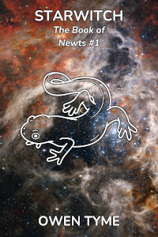

Tymely News
Work In Progress #23: Starwitch #6
"The distant woman groaned, 'We're not pirates, you idiot! We’re just new to space travel, so how could we possibly know how we're supposed to mark our ship, to make you think we're friendly?'
Haley growled, 'That's what a pirate would say!'
'It's also what a normal person would say. Now, if we were pirates, wouldn't we be trying to kill you, instead of talking?' "
– An excerpt from Starwitch.
 Starwitch is a novel about space-faring witches that I plan to release first as a web series, then for sale in online stores.
You can read short summaries of each day's writing on Mastodon.
Here's a list of previous blog entries on this work in progress novel, in order from oldest to newest:
Chapter 23: Solar Wind
Amelia and her sisters stand in the witchpit, while she demonstrates a light sail spell she's cast without assistance from the spell-core.
I did a little research on light sails and discovered that a better approach than reflecting light is to split it with a prism-like sail. I also considered the sails of Starwitch, in particular, and decided that it's an illusion anchored to the masts, via an enchantment. I edited the first chapter accordingly, adding a rainbow effect.
The rigging is enchanted to produce musical notes to indicate the level of pressure on the cables inside the masts, ranging from A to G-sharp, but if if goes up an octave, then the rigging is in danger of breaking under the strain, since steel cables can only handle so much.
Reasoning that illusions can affect light, I decided that Starwitch literally uses weightless illusions for sail material.
Amelia's sail is weak, little more than a spider's web of prism-like material, which she has to refresh from one second to the next, because even raw sunlight can scatter her illusions. Her spell can get the rigging to a C-sharp on one side and a B on the other, based on their angle.
Marta requests and is given an explanation of the basics of the spell.
Iris asks what part the masts play and Amelia explains that they bear enchantments to allow illusions to interact with solid matter, which allows the light pressure from the solar wind to give them thrust.
Iris asks why Amelia didn't just permanently enchant the sail spell into the masts, leading to a discussion of how various materials handle runic enchantments.
The basic idea is that the more types of material go into a crystalline structure like stone or metal, the more runes it can hold, at the cost of reduced power, due to less efficient magic.
I'll quote Amelia's explanation for this:
"Take granite, for example. It's basically many types of rock compressed together, which does give it a much greater capacity to store magic, allowing a large collection of runes to work at the same time, but that strength is also its weakness.
"When runes produce an effect from the magic stored in granite, all of those different types of rock each produce their own copy of the spell, all at slightly different frequencies. When the magic comes together as a cohesive whole, the many competing frequencies interfere with each other and the end result is a weaker spell, plus lots of magic that goes to waste. In fact, eighty percent of the magic is wasted and simply released into the air.
"Pure metals, on the other hand, have a rather simple structure. They can hold only three runes, but when those runes have an effect, it tends to be rather powerful, with only five percent waste.
"Steel, on the other hand, occupies the middle ground, able to hold up to seven runes, with reasonably powerful effects and only thirty percent waste, though the details vary by the recipe of the alloy.
"The masts of Starwitch had to be steel, for the sake of strength, which forced me to choose between the sail or the safety spell, plus a spell anchor. Ultimately, I went with safety."
Mythril is a bizarre outlier, however, with no known upper limit on the number of runes, plus power beyond that a pure metal should be capable of, due to the extreme density of the metal combined with its magical nature.
There's a brief discussion of the process of diffracting light, which involves Amelia using a prism as a visual aid.
Marta tries her own variation of the spell, which produces solid illusion of glass sails that extend about ten miles in every direction! This produces enough force for them to feel it and Amelia is quite impressed.
Marta's spell breaks up fairly quickly under the strain of the solar wind and shatters, just like glass.
Iris goes next, experimenting with an illusion of a diamond sail, which produces less force than Marta's, though it lasts longer. Amelia takes note of this improvement and heads for the spell-core, to produce a sail none of them will have to concentrate to maintain.
Just after Amelia gets a sail setup that extends for a hundred mile radius, Marta notes how clean the air of the room smells and asks why. Amelia points out the fact that the spell-core's primary function is to clean and refresh the air, which is an important point for the next chapter.
They go back to the witchpit and Amelia settles in to get them on course, while her sisters stare out at the rainbow their ship is producing.
Chapter 24: The Trouble With Breathing
Back in the present, Amelia wakes from an unintended nap, with a headache and dizziness, due to too little oxygen and too much carbon-dioxide, because without the spell-core, the air of the ship is going bad.
She's somewhat surprised the mathematical portions of her brain are working at full capacity, which is weird, though she has a difficult time keeping them from wandering all over the place, including calculating how long she can survive without a change in the current situation, coming up short. Just as quickly, she calculates the number of stars in the universe, then the number of zombies on the Dead Queen's ship.
She once again concludes The Book is enhancing her head for numbers and focuses long enough to run the numbers related to her survival a second time, realizing she has two hours to live, but only if she's unconscious. Unfortunately, it will be six hours before her attack run on the monolith begins.
Amelia gets out of the pilot's seat of Starwitch and gets herself to crew quarters, where she puts on a pressure suit she built for herself, which is in a high-visibility orange color. However, because she was in an artistic mood when she made it, it has black tiger stripes and a white belly, to make it look more like the animal. The helmet resembles a fishbowl.
With the suit on, she turns on her oxygen tank at 70% of normal, which is enough to survive on. Between her tank and those of her sisters, she calculates she can last for six hours at 70%, then have enough left over for twenty minutes of full mental clarity, which she'll need for her attack on the monolith.
Next, she heads for her workshop, where she grabs an icepick and a rubberized sack. She opens a steam engine and uses a little magic to freeze the water. With the sack held to catch the chips, she breaks up the ice. This is taken to one wall, where there's a system for filling the rear water tank of Starwitch. She dumps the ice into it, then repeats the process with the next steam engine, because she needs reaction mass to slow down the ship.
As she works, her mind wanders back to the past...
Chapter 25: Ice Palace Two
Amelia is again in the pilot's seat, using one of the scrying crystals to zoom in on a distant object, which turns out to be a huge block of ice floating in space, in the shape of a cube.
She calls her sisters into the witchpit to have a look, only for an alarm bell to sound. Marta demands to know what that is and Amelia says it's an alarm indicating hostile magic.
Amelia starts up the main engines, for the sake of evasive maneuvers, while a huge ball of ice detaches from the ice block and flies their way, but maneuvering does no good, because the ball seems to have a homing spell on it!
After casting a scrying spell, Iris barks orders: "Amelia, face us straight into it! Marta, on my mark, you shoot a heat spell, the strongest you've got, straight ahead!"
Iris waits until they've nearly collided, then shouts, "Now!"
Marta's heat spell causes the ball to instantly vaporize and they pass though a cloud of hot steam. It gets rather warm in the ship, but they're fine.
Meanwhile, we switch to the perspective of Port Commander Haley Knotley, a half-dwarf witch that's in charge of the block of ice, which is actually a port (in-book word for a space station). As it turns out, nearly the entire port is made of ice, though it has a spell-core at the center, like Starwitch.
Haley also has a small, mythril wand, which she uses to cast ice magic, to defend the port.
She mistook Starwitch for a pirate vessel, due to a lack of markings and attacked, to defend the station.
She sees her attack fail, only to be suddenly lifted off the floor by an invisible hand gripping her neck! This is Iris using remote-touch. Iris also uses a bone-transduction spell on Haley, so they can talk.
They argue for a moment, because Haley is beyond stubborn and has a hard time changing her mind once she's decided something, which is the very reason she's in charge of such a remote outpost. Iris eventually gets Haley to calm down and talk.
After accepting the possibility Starwitch might not be a pirate vessel, Haley reluctantly gives them permission to dock.
Iris takes the helm and coordinates with Haley, while Amelia and Marta turn off their light sail spell and retract the masts into the hull. Iris flies them around the side of the port, to an open bay door.
Inside, some figures in pressure suits scurry about, allowing Amelia to calculate the size of the port, at about two miles wide! The landing/docking bay is rather big, but there's only a few small ships parked inside.
Iris flies them into it, and some external force takes over, for final landing. Amelia and Marta are startled, but Iris tells them to relax, because Haley told her it was coming.
They deploy the landing gear of Starwitch and gently touch down. By the way, Starwitch is designed to land very much like a plane, on a set of tires, while the side masts can be made to function like wings.
As that's happening, one of the figures uses a mythril wand to close the hatch of the landing bay, which is made of ice. When that's done, another figures rushed to help, spraying water around the gap of the door, while the one with the wand uses it to freeze the water into a seal.
After that, the room begins to pressurize. Eventually, all three of the docking bay workers remove their helmets.
The sisters exit Starwitch and Amelia gets a look at three other ships that are all smaller than her own.
The first is a red sphere with eight dual-purpose legs that appear able to extend to great length, to serve as masts for sails.
The next is shaped like a white snowflake, with a central body for living spaces and six extensions that possibly serve as masts, despite each of them having windows and living spaces in them.
The last is shaped like a green bug, with six legs and a set of cloth masts that are folded up on top of it, much like wings.
Amelia is immediately confronted by an angry witch, because normal procedure involves a strict schedule for opening and closing the docking bay and they were woken up to let Starwitch in, a waste of water and time.
The angry witch is joined by a polite and friendly witch, who says a few soothing things to get the woman to calm down.
The first apologizes, then introduces herself as Agnes Vixen. The second says her name is Alice Talbot. Amelia introduces herself and her sisters.
The figure that manned the hose finishes putting it away, then runs over, introducing himself as Nonar Bonebuster, though he does so rather loudly, because he has hearing issues.
Alice says, "Don’t mind Agnes. She’s a very serious woman."
Nonar mishears and agrees that Angnes is very spurious. Agnes smacks him on the back of the head and they begin arguing, while Alice leads the sisters to one side.
She explains that Nonar and Agnes are married and argue all the time. She suggests with a wink that Nonar starts the arguments in public, so they can make-up in private.
Alice informs them that Haley wishes to see them, that she might apologize, and the sisters follow her.
Chapter 26: A New Way of Life
The sisters meet Haley face to face and Amelia accidentally insults Haley, by referring to her as a "little woman".
That's a label the half-dwarf objects to, because "little people" can be born to any race, but the dwarven race is distinct from them, just as elves, fairies, orcs, goblins and gnomes are not human.
Amelia apologizes and she learns about the existence of the other races and it would seem her home moon is entirely inhabited by humans, because she's never before heard of the other races.
As an apology for attacking them, Haley waives docking fees, and even offers to top of the water tanks of Starwitch, for free, a declaration that gets Alice to gasp, because Haley is extremely money-oriented.
Haley and the sisters introduce themselves and Haley asks where they're from. They tell the truth and Haley asks why they left.
Again, they speak honestly: persecution and forced servitude as living weapons. Alice is sympathetic to them, as is Haley, and they're assured they're among friends. They're told most any Ice Palace will openly welcome them.
Amelia asks why the port is made of ice and Haley reveals her money-oriented nature again, by explaining that water is the currency used in space, because everyone needs it. Her eyes light up as she explains that the place is literally made of money!
Further, Haley explains that the Ice Palace has a spell-core that keeps it at the right temperature and provides gravity. The port is called Ice Palace Two, though it used to have another name: Breadbasket.
The history of Cakana, the moon below them, is explained by Alice. Three-thousand years back, the moon was settled by witches and farmers, because it was one of two worlds in Junas orbit that was suitable for massive food production. After three-hundred years, the farmers objected to the witches "never doing an honest day's work" and rose up in rebellion, using you guessed it: torches and pitchforks.
The witches peacefully backed down and the farmers took over. This resulted in the witches no longer hauling food into orbit for sale, and most of them left. Only a few stayed behind, which were the ancestors of the Blackwell sisters.
This change in government of the moon cut them off from the other moons of Junas and led to a shortage of food for everyone else, causing many deaths, over a pointless disagreement.
Haley asks the sisters to consider how they wish to live, because that will determine their allegiance and which markings their ship should bear, to avoid getting killed by non-pirates.
Alice explains a few options:
- They could become port workers, but the pay is crap and they'd be stuck in place.
- They could join a merchant house to stay mobile, but the pay is still crap.
- They could become couriers, which pays good, but they'd lack the safety and backing of a merchant house.
- They could also become pirate hunters, who kill pirates for a living, a dangerous occupation.
Regardless, however, Haley can only help them become couriers, because they're out in the boonies, but once they reach a more important port, they'll have more options.
Alice brings up the subject of navigation tables. Every Ice Palace provides a free service of storing and sharing navigation tables, which are predetermined courses, including thrust and timing figures for courses guaranteed to be safe, if followed. At this point, it's revealed that most of the moons of Junas are in orbital resonance, which makes preset navigation possible.
Amelia is surprised no one travels more directly and her comments gets her hosts talking about the "Newt Witches", the mysterious witches that rule the star system, and who rarely interfere in the affairs of others, unless attacked.
The Newt Witches seem to have an innate ability to calculate direct courses in their heads, on top of having incredibly potent weapons and magic. The Newt Witches are also the group behind colonizing the system. They own the Ice Palaces (the ports) and dress in red, covering their whole bodies, except their eyes.
Haley shares a story of witnessing a Newt Witch use incredible magic to snuff a pirate ship out of existence, first crushing it, followed by making it grow smaller under the crushing power of her magic, until it vanished. Hypothetically, she described the formation of a small black hole. This witch used some form of magic item combined with her own powers to make that happen.
Despite this incredible show of power, the woman was kind to Haley and spend a lot of time chatting with her, because the witch liked children.
Amelia begins to suspect she's a descendant of a Newt Witch and after her sisters ask some pointed question, this is confirmed, because the witches that stayed on Cakana were Newt Witches.
More subtle questions shift the subject to the origin of the Newt Witches and Alice offhandedly mentions a myth about a magic book that taught them to fly through space, which they lost and have been searching for, though this is only one story among many.
Getting uncomfortable and wishing to change the subject, Amelia decides they should become couriers, at least for the time being, and Haley shows them the symbol they need to paint on their ship, which looks like a stylized sailing ship that will basically be the space equivalent to flying a particular flag.
Chapter 27: Rush Delivery
Six months later, Iris is busy minding the ship as they launch from Ice Palace Three, which is in orbit of a lush, garden world that lacks seasons, because it's perpetually like spring there.
As she gets Starwitch away from the station, she chats with the Port Commander via a bone transduction spell. The commander happens to be a fairy that fancies herself as a match-maker. She's been trying to setup Iris with her brother. As the subject comes up, Iris shades with embarrassment, but in the end, she decides aloud, "Next time."
She says goodbye to her friend and works the winches to deploy the masts.
After that, she passes into the entry room, which has become a cargo bay for the things they carry from port to port. Currently, it's full of oranges, which are a gift from the port commander of the local Ice Palace to the commander of another. This is a display of supreme confidence in the ability of Amelia to plot direct courses, because oranges spoil quickly.
Passing into crew quarters, she finds Amelia asleep, because she was up all night adding new cargo racks, since this shipment is the largest they've ever taken on, with the entry bay crammed from floor to ceiling, with only a narrow passage down the middle.
In the workshop, Iris finds Marta working at a potter's wheel to turn a bowl. Marta has been making and selling pots with runic enchantments, which are a big money maker, almost as good as their rush delivery service as couriers. It's revealed that almost no one in the system knows how runes work, aside from the Newt Witches, who don't sell enchantments.
Iris reaches the spell-core and briefly examines the current wheel of cheese the brownies have been eating, noting the fact they slowed down a lot, after the first few weeks.
She activates a sail spell, makes some minor adjustments to the gravity spell to help compensate for a coming engine burn, then heads back to the witchpit, where she pushes the engines to one-fifth power for twenty minutes, because their course requires both the sails and an engine burn, for a particularly speedy arrival.
In the next scene, Marta is minding the ship, in preparation for their last burn of the journey, after a few days travel. In the rear-view scrying crystal, a red moon looms ever larger.
Amelia pops her head in as Marta begins the burn, asking if she'd like to get some rest. Marta decides she wants to handle docking maneuvers.
Marta gets the ship inside Ice Palace Sixty-Eight and notices how full the docking bay is. Most of the ships belong to The Silver Circle, which is the most prominent merchant house, though there's also a great many from The Twilight Flame, another big house. There's some couriers mixed in, which makes Marta feel right at home.
The sisters have a two hour wait before the bay will pressurize and Marta joins her sisters for breakfast. Amelia jokes about the dwarf port commander, who's obsessed with oranges, constantly raving about the first time he ate one. She even does an impression of him: " 'Me was in heaven, it was so juicy and sweet! Me hardly noticed the skin was still on, because me didn't know better!' "
In the next scene, they present the dwarf with the best crate of oranges, for his personal consumption, while his men work to unload the rest.
The dwarf actually tears up and thanks them for the crate, then Marta informs them they brought ninety crates. The port commander's face becomes a mess of happy tears and he bites into one of the oranges, sucking the juice from it. His tears freeze before they even hit the floor.
When he's done draining the orange, he comments, "Sweet, juicy heaven!"
The sisters laugh and turn to leave, but he stops them long enough to hand over a sealed letter, claiming it's a job offer. The seal in the wax is a pair of crossed cutlasses, a symbol Amelia doesn't recognize.
Amelia opens and reads it, learning the Queen of a kingdom on the surface of Taneas wishes to hire them. Taneas is the most distant moon of Junas, named after the goddess of commerce. The moon is in an eccentric orbit that's only in direct contact with other worlds every 300 years, because it isn't in proper resonance with the other moons.
This Queen, named Edwina Rowley, wishes to initially employ the sisters as messengers, but if things go well, then she would like them to calculate courses for entire merchant convoys, promising 5% of all sales.
The sisters are moved with compassion for the people of Taneas and decide to take the job. Amelia takes them straight to the navigation table of the port, which is a slab of granite mounted in the wall of the main hall.
She examines the figures describing the orbit of Taneas and decides it is possible for them to get there, though it will take three weeks of sailing.
With nothing better to do until the port's bay door opens, they go shopping.
The next scene focuses on a woman in a parka that's been following and observing the sisters, without being noticed, despite the way she's shivering cold.
She uses a bone transduction spell to report: "Captain, the fish have taken the bait, hook, line and sinker. Looks like our intel was right, because they're real eager to help out ‘Queen Rowley’, may she reign forever. The youngest sister says they'll arrive in three weeks."
The woman she's contacted laughs at her joke, then says, "Good. Fishing is always better from a well-stocked pond. Continue to observe from a safe distance."
The witch in the parka ends her spell, then complains, "Just so long as I don’t freeze to death. I hate Ice Palaces!"
Chapter 28: Roaring Rowley
The Blackwell sisters have arrived in orbit of Taneas and they're above the night side of the moon, noting a bizarre sight: yellow-white dots and lines illuminate the land.
They're confused for a time, before Amelia explains that they're looking at what could only be a huge, sprawling city. It won't be revealed for some time, but Taneas has rejected magic and embraced technology. They're currently at about the level of Earth, but they do not look to the stars like we do.
In fact, they know space is full of magic, and anyone that touches their atmosphere will be shot at by multiple nations at once, with surface-to-air missiles. In effect, this is very much a "look, but don't touch" world.
The sisters aren't sure how to contact Queen Rowley and Amelia suggests they try to locate a suitable landing site, once they roll around to the daytime side. Failing that, they'll have to wait for the Queen to contact them, because she must employ someone with remote-viewing ability.
In the next scene, Captain Edwina "Roaring" Rowley comments, "You may rest assured in that, Amelia Blackwell."
She's been using remote-viewing magic to observe the sisters for days.
Her ship is made of glass and crystal, which normally gives a view of space, but at the moment, they're hidden by a spell to bend light around the ship, making them invisible. This makes it impossible to see, however, which is among the reasons Rowley is using scrying magic.
Her observations have turned up an interesting fact: Amelia is the owner of The Book of Newts, which Rowley is quite aware of, because she was a Newt Witch before she turned pirate.
The Book has been lost to the Newt Witches for 2,000 years, not because they misplaced it, but because it ran away. This isn't explained, but they were using it as a reference, rather than using it to explore the universe, which is why it arranged to be stolen, presumably by manipulating the mind of one of the witches.
The Order of Newts is mentioned as the name of the ruling body of witches and it's confirmed that Amelia's mathematical gift is basically what makes someone a Newt Witch, though not a member of the order. It's also explained that the mathematical gift gives one the ability to see through The Book's illusions, though the real truth is that Amelia's gift is weaker than average and The Book made sure she saw through the illusions, because it liked her mind.
Rowley intends to take The Book for herself, though she plans to act with great precaution, because she expects just about anything to happen. After all, Amelia has the book.
Rowley gives orders in preparation for an attack, which will happen as soon as they're out of the shadow of Teneas.
Tags: writing, work-in-progress, starwitch